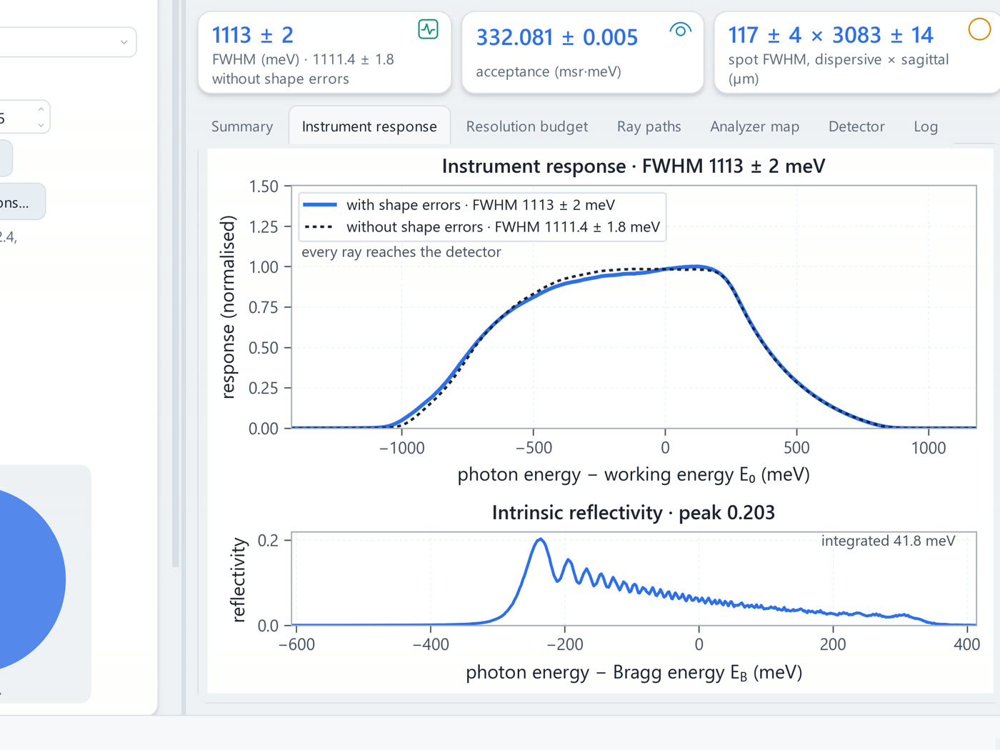
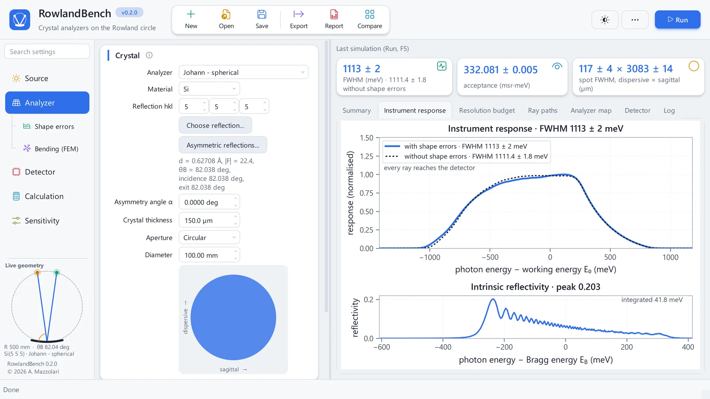
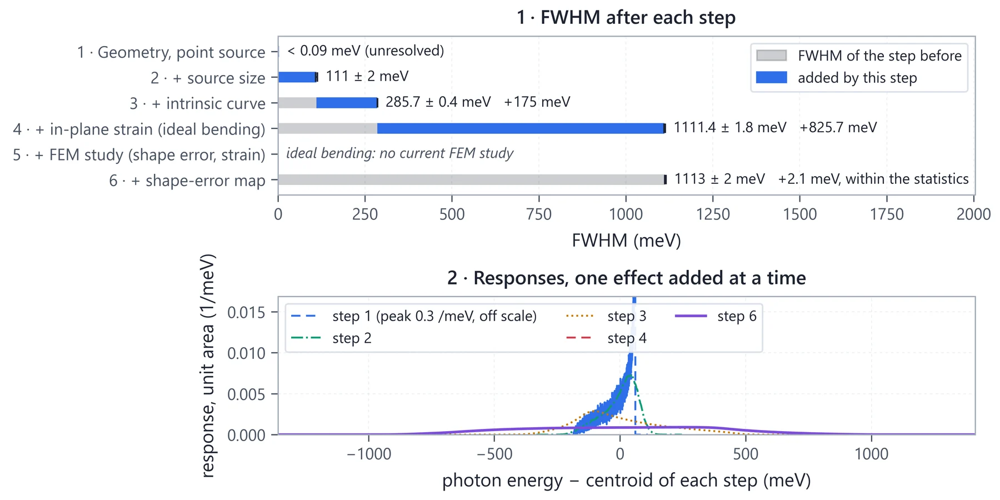
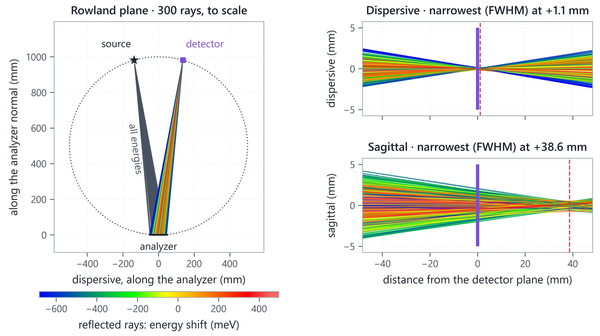
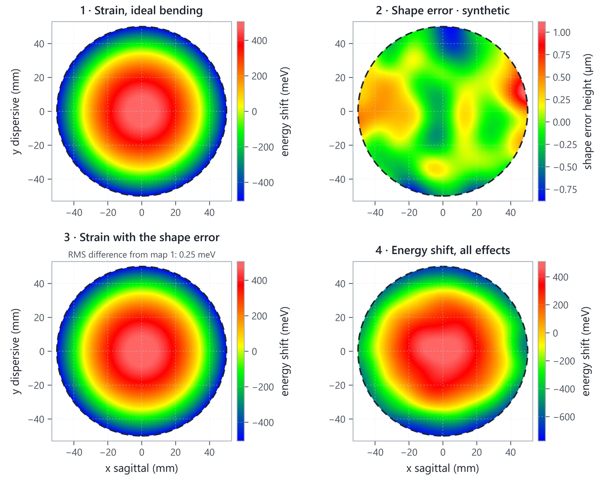

Crystal BOND / RowlandBench
RowlandBench
A desktop program for the design and simulation of X-ray spectrometers based on bent-crystal analysers, written in Ferrara.

What it does
The energy resolution of a bent-crystal analyser comes from several effects of comparable size: the size of the source, the Johann aberration, the reflectivity curve of the bent crystal, the strain left by bending, the errors of shape and the pixels of the detector. Choosing a design means weighing them together.
RowlandBench does these calculations in one place. It traces rays from an extended source to the analyser and the detector, and combines them with the Takagi–Taupin reflectivity of the bent crystal, the in-plane strain of the bonded wafer computed by finite elements, and shape errors taken from synthetic or measured interferometer maps. Integrating and position-resolving detectors with finite pixels are modelled.
For each design it reports the energy resolution with its statistical uncertainty, a budget of the contributions, and how resolution and efficiency respond to fabrication and alignment tolerances. A model of the incident-beam monochromator gives the elastic line of resonant inelastic X-ray scattering.
For BOND it is the tool to design the bonded analysers in quartz, lithium niobate and germanium, and to see how much of their resolution is lost to the shape of the bonded crystal.

What it covers
Analysers, materials and readouts that can be simulated.
| Analysers | Johann (cylindrical, spherical, toroidal), Johansson, diced, strip-bent, sliced, von Hámos; asymmetric reflections |
|---|---|
| Arrays | up to 72 crystals (12 columns, 8 rows), with a common or separate focus and individual misalignments |
| Materials | Si, Ge, α-quartz, sapphire, GaAs, LiF, diamond, InSb, LiNbO₃ |
| Imperfections | in-plane bending strain, finite-element contact of the wafer pressed on its substrate, synthetic or interferometric shape-error maps |
| Detectors | integrating or position-resolving, with finite pixels |
| Studies | parameter sweeps with response surfaces, tolerance studies, ranking of the analysers that reach a working energy |
| Output | energy resolution (FWHM) with uncertainty, acceptance, spot on the detector, resolution budget; export as CSV, JSON, PNG, HTML and PDF |
Results of a run
Three of the result views, for the same analyser.



Implementation and availability
RowlandBench is written in Python, with a Qt interface (PySide6), plots in Matplotlib and a three-dimensional view in PyVista. Crystal data come from xraylib, the reflectivity of bent crystals from the Takagi–Taupin solver pyTTE, X-ray tube spectra from SpekPy. Its results are compared with published measurements and calculations for strip-bent, diced and asymmetric spherically bent analysers.
The program is distributed as an installer for 64-bit Windows, under a free academic licence for universities and public research institutions. The article that describes it is in preparation.
- Author
- Andrea Mazzolari, University of Ferrara and INFN Ferrara
- Language
- Python, Qt 6 interface
- Platform
- Windows, 64 bit
- Licence
- free academic licence
- Reference
- article in preparation